The chain rule of derivatives is, in my opinion, the most important formula in differential calculus. In this post I want to explain how the chain rule works for single-variable and multivariate functions, with some interesting examples along the way.
Preliminaries: composition of functions and differentiability
We denote a function f that maps from the domain X to the codomain Y as . With this f and given , we can define 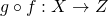 as the composition of g and f. It's defined for as:
In calculus we are usually concerned with the real number domain of some
dimensionality. In the single-variable case, we can think of  and
as two regular real-valued functions:
and
.
and
as two regular real-valued functions:
and
.
As an example, say and . Then:
We can compose the functions the other way around as well:
Obviously, we shouldn't expect composition to be commutative. It is, however, associative. and are equivalent, and both end up being for .
To better handle compositions in one's head it sometimes helps to denote the
independent variable of the outer function (g in our case) by a different
letter (such as  ). For simple cases it doesn't matter, but I'll
be using this technique occasionally throughout the article. The important thing
to remember here is that the name of the independent variable is completely
arbitrary, and we should always be able to replace it by another name throughout
the formula without any semantic change.
). For simple cases it doesn't matter, but I'll
be using this technique occasionally throughout the article. The important thing
to remember here is that the name of the independent variable is completely
arbitrary, and we should always be able to replace it by another name throughout
the formula without any semantic change.
The other preliminary I want to mention is differentiability. The function f
is differentiable at some point  if the following limit exists:
if the following limit exists:
This limit is then the derivative of f at the point , or
. Another way to express this is 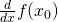.
Note that can be any arbitrary point on the real line. I sometimes
say something like "f is differentiable at ". Here too,
is just a real value that happens to be the value of the function
g at .
The single-variable chain rule
The chain rule for single-variable functions states: if g is differentiable at
and f is differentiable at , then  is differentiable at and its derivative is:
is differentiable at and its derivative is:
The proof of the chain rule is a bit tricky - I left it for the appendix. However, we can get a better feel for it using some intuition and a couple of examples.
First, the intuituion. By definition:
Multiplying both sides by h we get [1]:
Therefore we can say that when changes by some very small amount,
changes by  times that small amount.
times that small amount.
Similarly is the amount of change in the value of f for some
very small change from  . However, since in our case we compose
, we can say that
. However, since in our case we compose
, we can say that  , evaluating
. Suppose we shift by a small amount h. This
causes to shift by . So the input
of f shifted by - this is still a small amount! Therefore,
the total change in the value of f should be [2].
, evaluating
. Suppose we shift by a small amount h. This
causes to shift by . So the input
of f shifted by - this is still a small amount! Therefore,
the total change in the value of f should be [2].
Now, a couple of simple examples. Let's take the function . The idea is to think of this function as a composition of simpler functions. In this case, one option is: and then , so the original f is now the composition .
The derivative of this composition is , or since . Note that w is differentiable at any point, so this derivative always exists.
Another example will use a longer chain of composition. Let's differentiate
![f(x)=sin[(x+1)^2]](../../images/math/3e3a23e0dd5d4ee105bcca545bddb058917e2c9c.png) . This is a composition of three functions:
. This is a composition of three functions:
Function composition is associative, so f can be expressed as either or . Since we already know what the derivative of is, let's use the former:
The chain rule as a computational procedure
As the last example demonstrates, the chain rule can be applied multiple times in a single derivation. This makes the chain rule a powerful tool for computing derivatives of very complex functions, which can be broken up into compositions of simpler functions. I like to draw a parallel between this process and programming; a function in a programming language can be seen as a computational procedure - we have a set of input parameters and we produce outputs. On the way, several transformations happen that can be expressed mathematically. These transformations are composed, so their derivatives can be computed naturally with the chain rule.
This may be somewhat abstract, so let's use another example. We'll compute the derivative of the Sigmoid function - a very important function in machine learning:
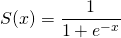To make the equivalence between functions and computational procedures clearer, let's think how we'd compute S in Python:
def sigmoid(x):
return 1 / (1 + math.exp(-x))
This doesn't look much different, but that's just because Python is a high level language with arbitrarily nested expressions. Its VM (or the CPU in general) would execute this computation step by step. Let's break it up to be clearer, assuming we can only apply a single operation at every step:
def sigmoid(x):
f = -x
g = math.exp(f)
w = 1 + g
v = 1 / w
return v
I hope you're starting to see the resemblance to our chain rule examples at this point. Sacrificing some rigor in the notation for the sake of expressiveness, we can write:
This is the chain rule applied to . Solving this is easy because every single derivative in the chain above is trivial:
Now you may be thinking:
- Every function computable by a program can be broken down to trivial steps like our sigmoid above.
- Using the chain rule, we can easily find the derivative of such a sequence of steps... therefore:
- We can easily find the derivative of any function computable by a program!!
An you'll be right. This is precisely the basis for the technique known as automatic differentiation, which is widely used in scienctific computing. The most notable use of automatic differentiation in recent times is the backpropagation algorithm - an essential backbone of modern machine learning. I personally find automatic differentiation fascinating, and will write a more dedicated article about it in the future.
Update (2025-01-13): Check out this post on the subject.
Multivariate chain rule - general formulation
So far this article has been looking at functions with a single input and
output: . In the most general case of
multi-variate calculus, we're dealing with functions that map from n
dimensions to m dimensions:  .
Because every one of the m outputs of f can be considered a separate
function dependent on n variables, it's very natural to deal with such math
using vectors and matrices.
.
Because every one of the m outputs of f can be considered a separate
function dependent on n variables, it's very natural to deal with such math
using vectors and matrices.
First let's define some notation. We'll consider the outputs of f to be numbered from 1 to m as . For each such we can compute its partial derivative by any of the n inputs as:
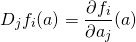Where j goes from 1 to n and a is a vector with n components. If f is differentiable at a [3] then the derivative of f at a is the Jacobian matrix:
![\[Df(a)=\begin{bmatrix} D_1 f_1(a) & \cdots & D_n f_1(a) \\ \vdots & & \vdots \\ D_1 f_m(a) & \cdots & D_n f_m(a) \\ \end{bmatrix}\]](../../images/math/ab09367d48e9ef4d8bc2314a60313dec700193af.png)
The multivariate chain rule states: given
and  and a point ,
if g is differentiable at a and f is differentiable at then
the composition is differentiable at a and its derivative
is:
and a point ,
if g is differentiable at a and f is differentiable at then
the composition is differentiable at a and its derivative
is:
Which is the matrix multiplication of 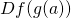 and 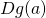 [4]. Intuitively, the multivariate chain rule mirrors the single-variable one (and as we'll soon see, the latter is just a special case of the former) with derivatives replaced by derivative matrices. From linear algebra, we represent linear transformations by matrices, and the composition of two linear transformations is the product of their matrices. Therefore, since derivative matrices - like derivatives in one dimension - are a linear approximation to the function, the chain rule makes sense. This is a really nice connection between linear algebra and calculus, though a full proof of the multivariate rule is very technical and outside the scope of this article.
Multivariate chain rule - examples
Since the chain rule deals with compositions of functions, it's natural to
present examples from the world of parametric curves and surfaces. For example,
suppose we define as a scalar function
giving the temperature
at some point in 3D. Now imagine that we're moving through this 3D space on
a curve defined by a function 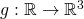 which takes
time t and gives the coordinates at that time. We want
to compute how the temperature changes as a function of time t - how do we do
that? Recall that the temprerature is not a direct function of time, but rather
is a function of location, while location is a function of time. Therefore,
we'll want to compose . Here's a concrete example:
And:
![\[f\begin{pmatrix} x \\ y \\ z \end{pmatrix}=x^2+xyz+5y\]](../../images/math/0a2fc40b06886d3b54628680192d71a3186d9fc7.png)
If we reformulate x, y and z as functions of t:
Composing , we get:
Since this is a simple function, we can find its derivative directly:
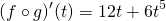Now let's repeat this exercise using the multivariate chain rule. To compute we need 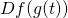 and . Let's start with . maps , so its Jacobian is a 3-by-1 matrix, or column vector:
To compute let's first find . Since maps , its Jacobian is a 1-by-3 matrix, or row vector:
To apply the chain rule, we need :
Finally, multiplying by , we get:
Another interesting way to interpret this result for the case where
and
is to recall that
the directional derivative of f in the direction of some vector  is:
is:
In our case  is the Jacobian of f (because of its
dimensionality). So if we take to be the vector ,
and evaluate the gradient at we get [5]:
is the Jacobian of f (because of its
dimensionality). So if we take to be the vector ,
and evaluate the gradient at we get [5]:
This gives us some additional intuition for the temperature change question. The change in temperature as a function of time is the directional derivative of f in the direction of the change in location ().
For additional examples of applying the chain rule, see my post about softmax.
Tricks with the multivariate chain rule - derivative of products
Earlier in the article we've seen how the chain rule helps find derivatives of
complicated functions by decomposing them into simpler functions. The
multivariate chain rule allows even more of that, as the following example
demonstrates. Suppose  . Then, the well-known product rule of derivatives states that:
. Then, the well-known product rule of derivatives states that:
Proving this from first principles (the definition of the derivative as a limit) isn't hard, but I want to show how it stems very easily from the multivariate chain rule.
Let's begin by re-formulating as a composition of two functions.
The first takes a vector in 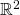 and maps it to
 by computing the product of its two components:
by computing the product of its two components:
The second is a vector-valued function that maps a number to :
We can compose , producing a function that takes a scalar an returns a scalar: . We get:
Since we're composing two multivariate functions, we can apply the multivariate chain rule here:
![\[\begin{align*} D(p \circ s) &= Dp(s(x)) \cdot Ds(x)\\ &=\begin{bmatrix} \frac{\partial p}{\partial s_1}(x) & \frac{\partial p}{\partial s_2}(x) \end{bmatrix}\cdot \begin{bmatrix} {s_1}'(x)\\ {s_2}'(x) \end{bmatrix}\\ &=\begin{bmatrix} s_2(x) & s_1(x) \end{bmatrix} \cdot \begin{bmatrix} {s_1}'(x)\\ {s_2}'(x) \end{bmatrix}\\ &={s_1}'(x)s_2(x)+{s_2}'(x)s_1(x) \end{align*}\]](../../images/math/ee8bd27a8257039f72c8751eb78626521f12a5fa.png)
Since and  , this is exactly the product
rule.
, this is exactly the product
rule.
Connecting the single-variable and multivariate chain rules
Given function , its Jacobian matrix has a single entry:
Therefore, given two functions mapping , the derivative of their composition using the multivariate chain rule is:
![\[D(f \circ g)(a)=Df(g(a))\cdot Dg(a)=f'(g(a))g'(a)\]](../../images/math/98e554584c9d2d967b9a6759a64126093ef704ce.png)
Which is precisely the single-variable chain rule. This results from matrix multiplication between two 1x1 matrices, which ends up being just the product of their single entries.
Appendix: proving the single-variable chain rule
It turns out that many online resources (including Khan Academy) provide a flawed proof for the chain rule. It's flawed due to a careless division by a quantity that may be zero. This flaw can be corrected by making the proof somewhat more complicated; I won't take that road here - for details see Spivak's Calculus. Instead, I'll present a simpler proof inspired by the one I found at Casey Douglas's site.
We want to prove that:
Note that previously we defined derivatives at some concrete point .
Here for the sake of brevity I'll just use  as an arbitrary point,
assuming the derivative exists.
as an arbitrary point,
assuming the derivative exists.
Let's start with the definition of :
We can reorder it as follows:
Let's give the part in the brackets the name .
Similarly, if the function f is differentiable at the point , we have:
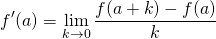We reorder:
And call the part in the brackets . The choice of the variable used to go to zero: k instead of h is arbitrary and is useful to simplify the discussion that follows.
Let's reorder the definition of a bit:
We can apply f to both sides:
By reordering the definition of we get:
Now taking the right-hand side of (1), we can look at it as since and we can define . We still have k going to zero when h goes to zero. Assigning these a and k into (2) we get:
So, starting from (1) again, we have:
![\[\begin{align*} f(g(x+h))&=f(a+k) \\ &=f(g(x))+[f'(g(x))+\Delta f(g(x))][g'(x)+\Delta g(x)]h \end{align*}\]](../../images/math/82e67cf24d9eb3dad58e7d30cd89ba1c19e367fb.png)
Subtracting from both sides and dividing by h (which is legal, since h is not zero, it's just very small) we get:
Apply a limit to both sides:
Now recall that both and go to 0 when h goes to 0. Taking this into account, we get:
Q.E.D.
| [1] | Here, as in the rest of the post, I'm being careless with the usage of , sometimes leaving its existence to be implicit. In general, wherever h appears in a formula we know there's a there, whether explicitly or not. |
| [2] | An alternative way to think about it is: suppose the functions
f and g are linear: 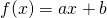 and . Then
the chain rule is trivially true. But now recall what the derivative is.
The derivative at some point is the best linear approximation
for the function at that point. Therefore the chain rule is true for any
pair of differentiable functions - even when the functions are not
linear, we approximate their rate of change in an infinitisemal area
around with a linear function. |
| [3] | The condition for f being differentiable at a is stronger than simply saying that all partial derivatives exist at a, but I won't spend more time on this subtlety here. |
| [4] | As an exercise, verify that the matrix dimensions of and make this multiplication valid. |
| [5] | It shouldn't be surprising we get here, since the definition of the directional derivative as the gradient was derived using the multivariate chain rule. |